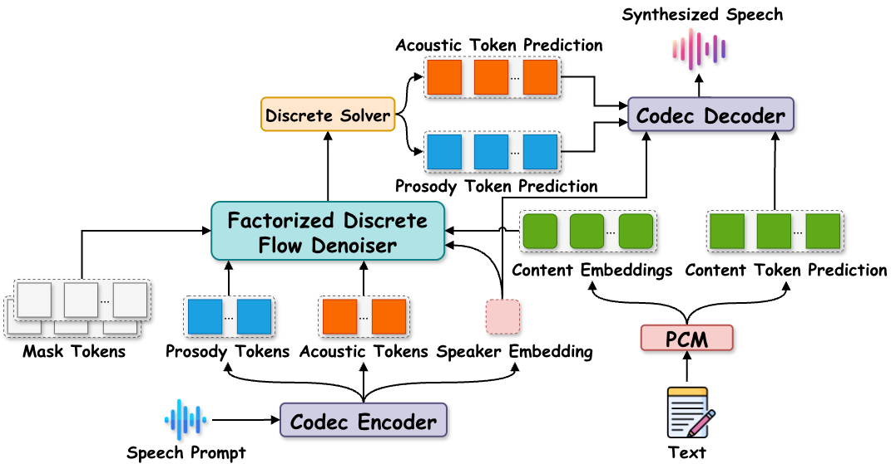
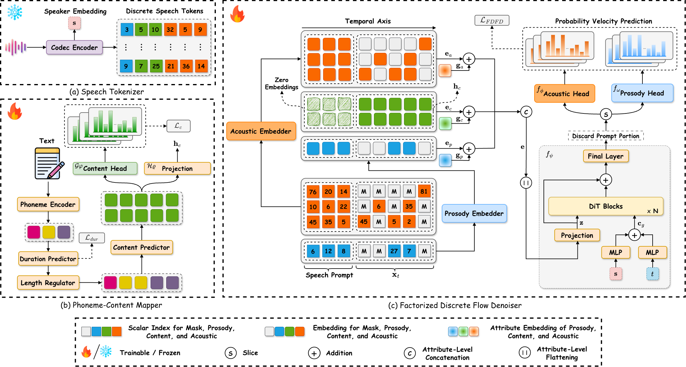

Zero-shot text-to-speech (TTS) has made significant progress in replicating unseen voices, yet balancing generation quality and inference efficiency remains challenging. Autoregressive models suffer from high latency, while diffusion-based approaches are constrained by training-time configurations. Moreover, most flow-based methods operate in continuous space, which introduces optimization challenges because continuous token spaces are inherently more complex than discrete ones. To address these limitations, we propose DiFlow-TTS, a novel zero-shot TTS framework based on discrete flow matching. The model consists of a deterministic Phoneme-Content Mapper for linguistic modeling and a Factorized Discrete Flow Denoiser that simultaneously generates prosody and acoustic token streams. Experimental results demonstrate the effectiveness of our approach across multiple evaluation metrics.
🔧 Method

Figure 1: Overview of DiFlow-TTS. A Codec Encoder decomposes the speech prompt into a speaker embedding, prosody, and acoustic tokens for zero-shot style transfer, while the Phoneme-Content Mapper converts text into content tokens and content embeddings. Conditioned on the content embeddings and the speaker identity, prosody, and acoustic tokens extracted from the speech prompt, the Factorized Discrete Flow Denoiser simultaneously generates prosody and acoustic tokens. Finally, the generated tokens together with the speaker embedding are fed into the Codec Decoder to reconstruct the waveform.

Figure 2: Detailed architecture of DiFlow-TTS. We formulate zero-shot TTS as token prediction over a factorized codec token space. Speech is tokenized by the (a)Speech Tokenizer into content, prosody, and acoustic tokens along with a speaker embedding. Built on these tokens, we design a framework comprising two main modules: (b)Phoneme-Content Mapper, which maps input phonemes to discrete content tokens and generates corresponding content embeddings; and (c)Factorized Discrete Flow Denoiser, which performs discrete flow matching conditioned on the speaker embedding, the discrete prosody and acoustic tokens derived from the speech prompt, and the content embeddings.
🎯 Challenges
Existing zero-shot TTS paradigms each hit a different wall:
🐢High-latency autoregressive generation
Synthesizing tokens step-by-step makes inference inherently slow.
⛓️Diffusion ties training to sampling
Tightly coupling the training and sampling processes restricts sampling configurations to those established during training.
🌀Continuous space complexity
Operating over continuous, high-dimensional, unbounded representations complicates density estimation and invites out-of-distribution artifacts.
✨ Quantitative Results
Performance on LibriSpeech test-clean
Model
Data (hrs)
UTMOS ↑
WER ↓
SIM-O ↑
F0 Acc. ↑
F0 RMSE ↓
Energy Acc. ↑
Energy RMSE ↓
Ground Truth
-
4.10
0.02
-
-
-
-
-
VoiceCraft
GS (9K)
3.55
0.18
0.51
0.78
17.22
0.44
0.010
VALL-E
LT (500)
3.68
0.19
0.40
0.75
21.66
0.36
0.020
NaturalSpeech 2
LT (585)
2.38
0.09
0.31
0.80
15.62
0.25
0.020
F5-TTS
LT (500)
3.76
0.24
0.52
0.80
13.78
0.67
0.010
F5-TTS
E (100K)
3.72
0.09
0.66
0.83
12.66
0.66
0.010
OZSpeech
LT (500)
3.15
0.05
0.40
0.81
11.96
0.67
0.010
MaskGCT
E (100K)
3.83
0.09
0.67
0.77
14.33
0.75
0.007
DiFlow-TTS (Ours)
LT (470)
3.98
0.05
0.45
0.88
7.97
0.73
0.007
Bold = best per column. Results use 3-second audio prompts; DiFlow-TTS is evaluated with 128 NFE and trained on only 470 hours — far less data than every baseline.
Model Size & Inference Latency
Model
#Params ↓
NFE
RTF ↓
UTMOS ↑
WER ↓
SIM-O ↑
F0 RMSE ↓
Energy RMSE ↓
VoiceCraft
830M
-
1.70
3.55
0.18
0.51
17.22
0.010
VALL-E
594M
-
0.86
3.68
0.19
0.40
21.66
0.020
NaturalSpeech 2
378M
200
1.66
2.38
0.09
0.31
15.62
0.020
F5-TTS
336M
32
0.26
3.72
0.09
0.66
12.66
0.010
OZSpeech
145M
1
0.03
3.15
0.05
0.40
11.96
0.010
MaskGCT
1.43B
50+45*
0.46
3.83
0.09
0.67
14.33
0.007
DiFlow-TTS-Small (Ours)
122M
4
0.03
3.34
0.06
0.43
8.31
0.007
16
0.05
3.89
0.05
0.45
8.58
0.008
DiFlow-TTS (Ours)
164M
4
0.03
3.31
0.05
0.44
8.05
0.007
16
0.07
3.86
0.05
0.45
7.96
0.007
* MaskGCT is a two-stage system that first predicts masked semantic tokens, then infers masked acoustic tokens. Bold = best per column. DiFlow-TTS-Small is up to 11.7× smaller than MaskGCT and up to 34× faster than VoiceCraft at comparable or better quality.
Best Naturalness🏆
Best Content Accuracy🛡️
Strong Prosody Accuracy🥇
Data Efficiency📊
🔊 Qualitative Results
All audio samples on this demo page were generated by DiFlow-TTS (NFE=128), trained on 470 hours of the LibriTTS dataset.
LibriSpeech test-clean
#
Transcription
Prompt
Synthesized Speech
1
As soon as these dispositions were made, the scout turned to David and gave him his parting instructions.
2
The task will not be difficult, returned David, hesitating, though I greatly fear your presence would rather increase than mitigate his unhappy fortunes.
3
In both these high mythical subjects, the surrounding nature, though suffering, is still dignified and beautiful.
4
Keswick, March twenty second, eighteen thirty seven. Dear Madam.
5
The meter continued in general service during eighteen ninety nine and probably up to the close of the century.
6
As used in the speech of everyday life, the word carries an undertone of deprecation.
7
That is the best way to decide, for the spear will always point somewhere, and one thing is as good as another.
8
There came upon me a sudden shock when I heard these words, which exceeded anything which I had yet felt.
9
We are quite satisfied now, Captain Battleax, said my wife.
10
As he flew, his down-reaching, clutching talons were not half a yard above the fugitive's head.
 2.
2.